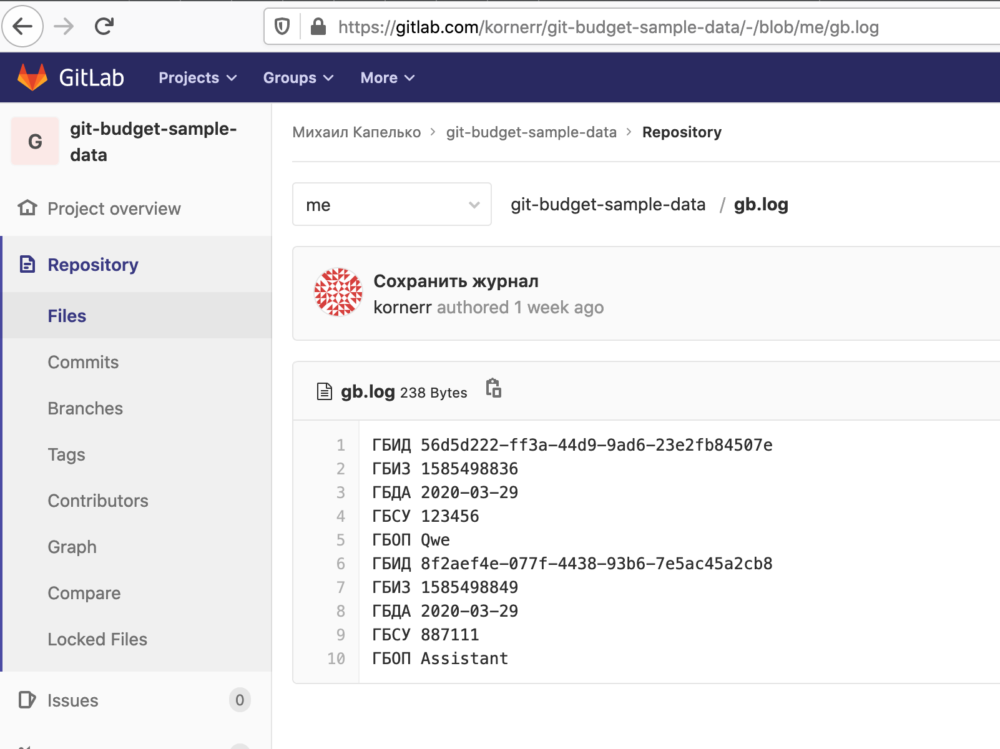
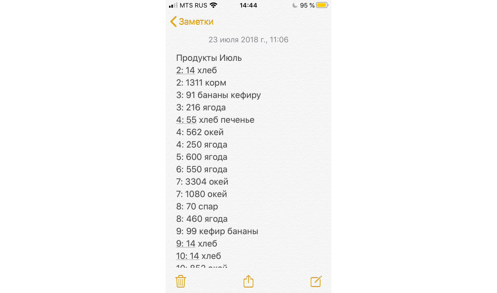
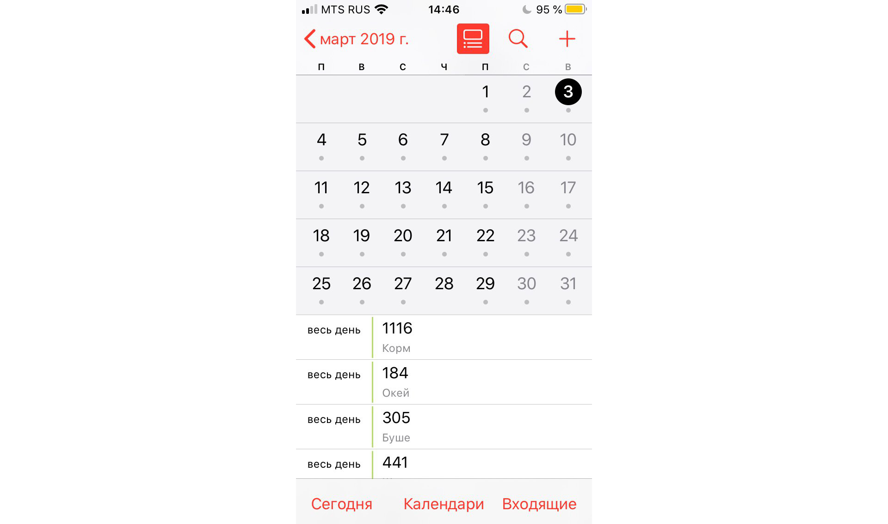
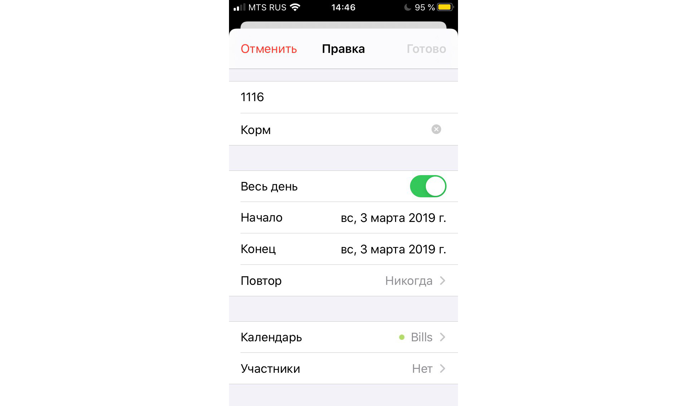
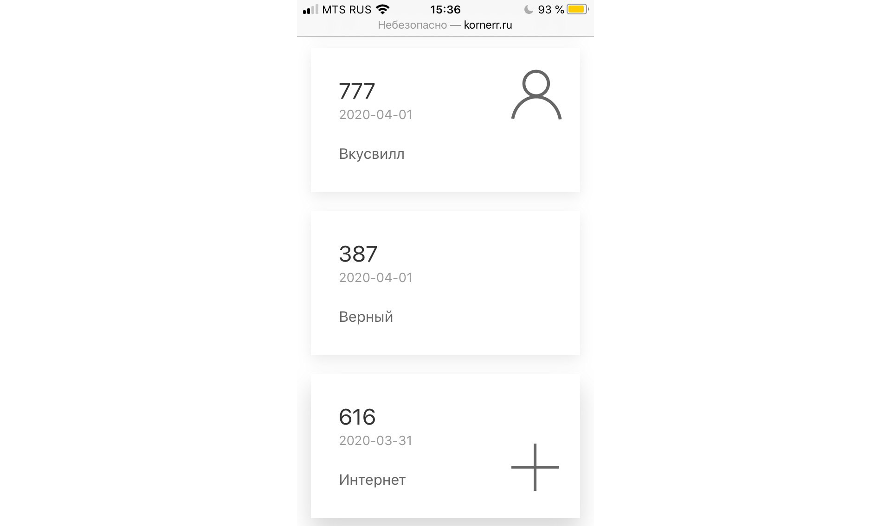

2020-05-03 00:00

В этой статье Михаил поделится опытом использования Git+JS.
Здравствуйте, господа, в этой статье я поделюсь опытом создания приложения учёта трат, в частности отвечу на следующие вопросы:
1. Зачем мне приложение учёта трат?
Как и многие другие люди я давно хотел стать богатым и практиковать успешный успех. Одной из рекомендаций в таких случаях часто выступает предложение вести собственный бюджет, чем я и занялся несколько лет назад. Скажу сразу, что ведение бюджета не сделало меня богатым и успешным, а своё материальное положение я улучшил обычным переездом в Москву.
Вести бюджет я начал, если не изменяет память, где-то в 2012-м году. В то время у меня уже была профессиональная деформация программиста, выражающаяся формулой "сделано не мной" и попыткой написать всё самому. Тем не менее, по неопытности я решил начать с "проверенных" решений и приобрёл YNAB (You Need A Budget), т.к. приложение позволяло работать и с ПК, и с телефона.
Я честно пытался задавать план трат на месяц и укладываться в него года три. Однако, где-то в 2015-м году авторы выпустили новую версию приложения, за которую опять хотели денег, старую же версию эти недальновидные капиталисты выкинули на обочину истории. В итоге мне пришлось выбирать из двух вариантов:
Я рассудил, что:
и выбрал второй вариант: послал их нафиг и потерял историю трат.
Эта ситуация меня довольно сильно разочаровала, поэтому я забросил ведение бюджета где-то на год. Однако, в один из дней "болезненной синхронизации" (также известной как "выяснение отношений") я не смог отбить финансовый наброс вида "ты транжира, вечно тратишь деньги на ерунду", после чего ясно осознал важность учёта трат.
В этот раз я решил не повторять ошибку и не отдавать свои данные неизвестно куда с потенциальной возможностью их потерять, поэтому начал вести учёт трат в самых обычных заметках телефона. Формат был довольно простым и выглядел следующим образом:

Заметки продержались у меня до середины 2018-го, пока я всё-таки не захотел иметь возможность работать с тратами на ПК, чтобы анализировать их. Я решил поискать решение, которое позволит мне бесплатно работать с историей трат и на ПК, и на телефоне. Таким решением оказался обычный календарь:


В календаре я использовал учётку Google, чтобы иметь доступ к Apps Script (фактически JavaScript) для анализа записей. Делать скрипты оказалось не очень удобно, т.к. формат хранения календарных записей мало подходит для трат. Вопрос владения данными также оставался нерешённым: мои данные опять пылились на неизвестном и неподконтрольном мне сервере, а доступ к ним был лишь через неподконтрольный мне и изменяющийся по чужой прихоти API.
Во время использования календаря меня периодически посещали две мысли:
Осенью 2019-го я наткнулся на проект Isomorphic-Git, позволяющий работать с Git из JavaScript, бегло проверил его работоспособность и понял, что нашёл свой Святой Грааль. Недавно я завершил создание первой версии приложения ГитБюджет, функциональность которого можно увидеть в следующем видео:
В итоге, сейчас учёт трат на телефоне у меня выглядит следующим образом:

Данные в Git выглядят cледующим образом: https://gitlab.com/kornerr/git-budget-sample-data/-/blob/me/gb.log
Отмечу некоторые важные моменты:
2. Почему это личный проект?
На ГитБюджет я потратил 40 часов своей жизни в течение первого квартала 2020-го, т.е. в среднем каждый день я тратил около получаса.
Личный проект обладает следующими преимуществами по сравнению с рабочим:
У личного проекта также есть и недостатки:
Легко заметить, что все недостатки личного проекта перекрываются преимуществами рабочего проекта. А все недостатки рабочего проекта перекрываются преимуществами личного проекта. Инь и янь.
3. Почему проект на Git+JS?
Хранение данных в Git вместо неизвестного сервера/API даёт следующие преимущества:
Использование JS с HTML/CSS вместо Swift/Kotlin/C#/Python даёт следующие преимущества:
ГитБюджет является лишь первым испытанием возможностей Git+JS. Посмотрим, что удастся сделать ещё.